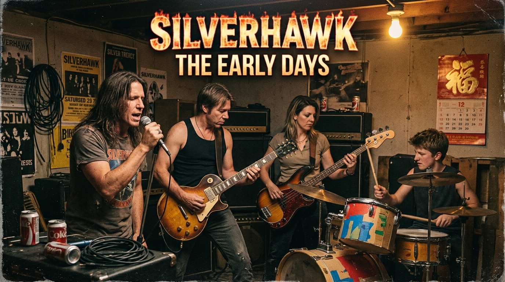
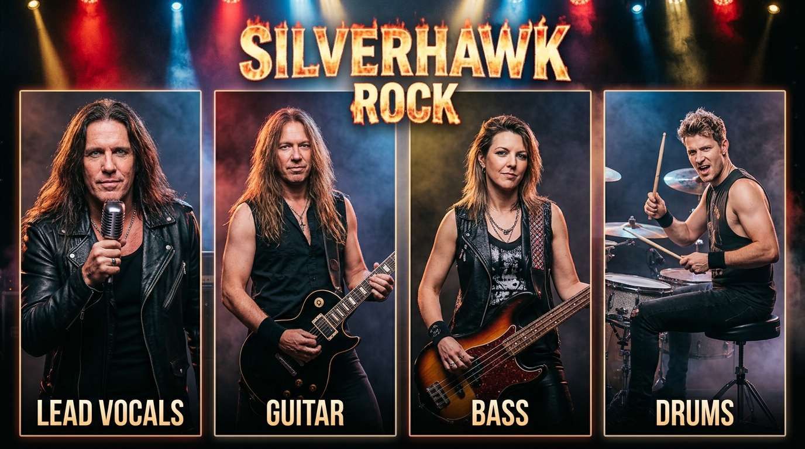

阿哲 主唱
把沒說出口的心事，唱成每個人的合唱。
A BAND, A THOUSAND STORIES

OUR STORY
Silverhawk 從朋友間的一次即興合奏開始。四個人帶著各自的節奏，在失真吉他與真誠歌聲裡，找到共同的方向。
我們把旅途、遺憾與微小的希望寫進歌裡。每一次登台，都是把這些故事交到你手上。
四個人，一個聲音。MEET THE BAND
台上是樂團，台下是一起走了很久的朋友。

把沒說出口的心事，唱成每個人的合唱。
用一道道音牆，描出歌曲裡的遠方。
穩穩地守住節奏，也讓低音開始呼吸。
每一次落下的鼓點，都是下一段旅程的起點。
SEE YOU OUT THERE
演出即將開始，敬請期待！
台北流行音樂中心 · 表演廳
19:30 開演
Legacy Taichung
19:30 開演
高雄流行音樂中心 · LIVE WAREHOUSE
19:30 開演
台南文化中心 · 原生劇場
19:30 開演
場次資訊以主辦單位公告為準，期待現場見。
A FIRST LISTEN · NEW SINGLE
有些相遇，悄悄偷走了平凡的一天。戴上耳機，聽聽 Silverhawk 的全新現場影像。
按下播放鍵即可試聽；可使用播放器調整音量與播放進度。